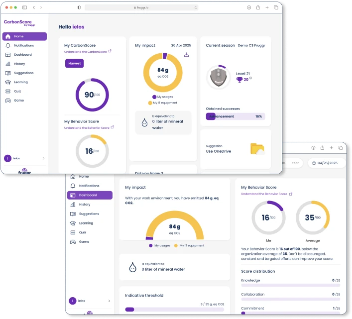

Work / CarbonScore
CarbonScore
CarbonScore shows the employees of an organisation on Microsoft 365 the carbon footprint of their digital use, and gets them to act through a game, quizzes and training. It runs in the browser, in Outlook and in Teams. I have worked on it since 2021, as developer then lead, and I maintain it today.
- Company
- TechupClimate, then Digital4Better
- Role
- Developer, then lead; main maintainer today
- Years
- 2021–now
- Runs in
- Browser, Outlook, Teams
- Stack
- TypeScript, Vue, NestJS, PostgreSQL, Kubernetes, Azure
- Visuals
- Published by Fruggr, demo data

The product
- Each person's daily footprint: mailbox and file storage, Teams meetings, equipment, printing and Copilot, with two scores and a comparison with their organisation.
- Eco-gestures, training paths and quizzes, in French and English.
- A game with levels, achievements, seasons, teams and leaderboards, updated in real time.
- A supervisor space that follows adoption and the footprint across the organisation, by department, city or company.
What I built
- The first calculation service, which set the split between collecting and computing jobs that still structures the product.
- The game engine and most of its interface, with real-time updates.
- Microsoft 365 usage data from Graph reports, and later the measurement of each Copilot interaction.
- The equipment module, end to end.
- The front end's move to Vue 3, and its data layer shared by the web app, Outlook and Teams.
- The monthly e-mail report.
Running it
- As lead: its releases, and the review of the junior developers' work. Mentored and trained apprentices.
- New clients set up end to end, and their data carried over when they change Microsoft tenant.
- Since 2025, its main maintainer: security fixes, an audit run with Claude Code, and agent skills for the team's recurring tasks.